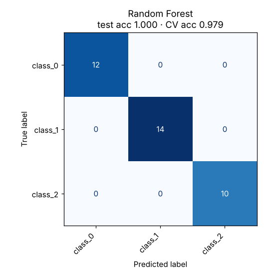

Random Forest
Trains many different decision trees on random samples of the data and averages their votes.
Try it
Experiment: Set Number of trees to 1, then to 60, keeping depth at 8. Watch the test accuracy and the smoothness of the boundary.
The idea
One deep tree overfits in its own particular way. A forest trains hundreds of trees, each on a bootstrap sample (rows drawn with replacement) and each allowed to look at only a random subset of features at every split. The trees end up different, and their mistakes partly cancel out when you average them.
In the demo, slide “Show” to inspect a single tree. It is jagged and overconfident. Return to the whole forest and the boundary becomes smooth.
How it works, step by step
- Draw a bootstrap sample of the training rows.
- Grow a decision tree on it, considering only a random subset of features at each split.
- Repeat for many trees (typically 100–500).
- Predict by majority vote (classification) or averaging (regression).
Strengths and weaknesses
Strengths
- High accuracy with little tuning
- Hard to overfit by adding trees
- Gives feature importances
- Handles mixed data, non-linearity and interactions
Weaknesses
- Less interpretable than one tree
- Bigger and slower to predict than a single model
- Cannot extrapolate beyond the range of the training targets
Use it when: A dependable first choice for tabular data when you want strong results quickly.
Avoid it when: You need a tiny, fully explainable model, or must extrapolate trends.
In this repository
Dataset: Wine (178 rows, 13 features)
The test set has only 36 examples, so one mistake moves accuracy by 2.8 points. The cross-validation score is the more reliable number.

from sklearn.ensemble import RandomForestClassifier
forest = RandomForestClassifier(n_estimators=300, max_features="sqrt").fit(X_train, y_train)
sorted(zip(forest.feature_importances_, feature_names), reverse=True)[:5]Full code: models/07_random_forest. Train it on your own data with
python models/07_random_forest/train.py --data your.csv --target column.
Check yourself
Randomness in rows and features decorrelates the trees.
More trees rarely hurt accuracy; they mainly cost time.
Gradient boosting is the sequential alternative.
Answer all three correctly to mark this model as learned.